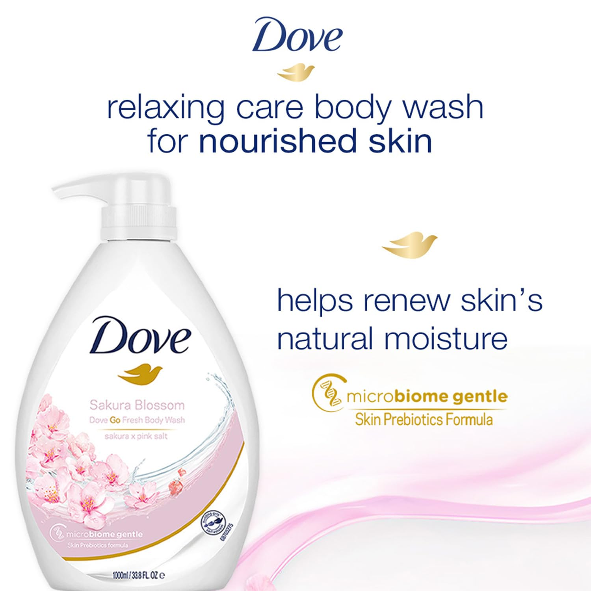

Sakura Blossom Body Wash
Inclusive of all taxes (1L)
"Transform your shower into a spring garden. Gentle cleansing for naturally glowing skin."
Indulge in the delicate fragrance of cherry blossoms with the **Dove Refreshing Sakura Blossom Body Wash**. This unique formula combines Dove's signature moisture with **Himalaya Pink Salt** to gently cleanse and replenish your skin. It leaves your skin feeling refreshed and revitalized without stripping away its natural moisture.
As an Amazon Associate, I earn from qualifying purchases.
Why We Love It
It is the perfect balance of a refreshing cleanse and deep nourishment. While the Himalaya Pink Salt provides a subtle, mineral-rich detox, the creamy Dove lather ensures your skin stays silky smooth. Plus, the Sakura scent is light and sophisticated, not overpowering.
How to Use
- 01 Pour a drop of body wash onto a wet loofah or your hands.
- 02 Massage into a rich, creamy lather over your entire body.
- 03 Rinse off to reveal soft, refreshed, and fragrant skin.
Who It's For
- Anyone looking for a refreshing yet hydrating daily shower experience.
- Dull skin in need of a mineral-rich revitalization.
- Families looking for a large-format (1L), high-quality body wash.